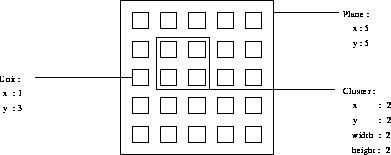
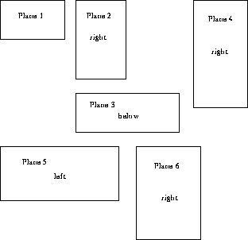
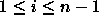
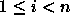
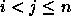

: Input data is entered at the end of the plane or the link list.
 :
Input data is inserted in the plane list in front of the current plane.
:
Input data is inserted in the plane list in front of the current plane.
: The current element is replaced by the input data.
: The current element is deleted.
: The data of the current plane is written to the edit plane.
: The data of the current link is written to the edit link.
: The type (input, hidden, output) of the units of a plane is determined.
: The position of a plane is always described relative
(left, right, below) to the position of the previous plane. The upper
left corner of the first plane is positioned at the coordinates (1,1)
as described in Figure  . BigNet then
automatically generates the coordinates of the units.
. BigNet then
automatically generates the coordinates of the units.


: A fully connected feed forward net is generated. If there are n planes numbered then every unit in plane i with i>0 is connected with every unit in plane i+1 for all

.: If there exist n planes then every unit in plane i with

is connected with every unit in all planes j with
.: The net described by the two editors is generated by SNNS. The default name of the net is SNNS_NET.net. If a net with this name already exists a warning is issued before it is replaced.
 :
All internal data of the editors is deleted.
:
All internal data of the editors is deleted.
 :
Exit BigNet and return to the simulator windows.
:
Exit BigNet and return to the simulator windows.